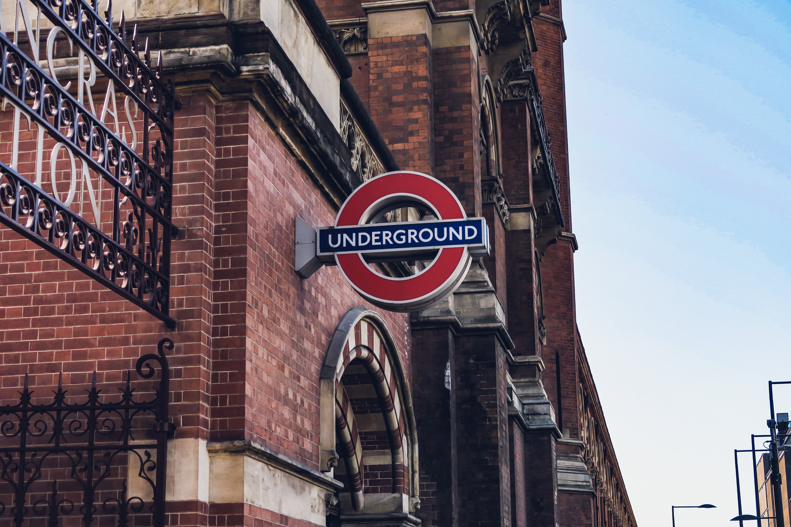

It's a website about London, UK.
WELCOME TO LONDON !
Wiki says:
London is the capital and largest city of England and the United Kingdom with a total population of 9,002,488.[9] It stands on the River Thames in south-east England at the head of a 50-mile (80 km) estuary down to the North Sea, and has been a major settlement for two millennia.[10] The City of London, its ancient core and financial centre, was founded by the Romans as Londinium and retains boundaries close to its medieval ones.[note 1][11] Since the 19th century,[12] "London" has also referred to the metropolis around this core, historically split between the counties of Middlesex, Essex, Surrey, Kent, and Hertfordshire,[13] which largely comprises Greater London,[14] governed by the Greater London Authority.[note 2][15] The City of Westminster, to the west of the City of London, has for centuries held the national government and parliament.
As one of the world's global cities,[16] London exerts strong influence on its arts, commerce, education, entertainment, fashion, finance, health care, media, tourism, and communications,[17] and has sometimes been called the capital of the world. Its GDP (€801.66 billion in 2017) makes it the biggest urban economy in Europe,[18] and it is one of the major financial centres in the world. In 2019 it had the second-highest number of ultra high-net-worth individuals in Europe after Paris[19] and the second-highest number of billionaires in Europe after Moscow.[20] As of 2021, London has the most millionaires of any city.[21] With Europe's largest concentration of higher education institutions,[22] it includes Imperial College London in natural and applied sciences, the London School of Economics in social sciences, and the comprehensive University College London.[23] The city is home to the most 5-star hotels of any city in the world.[24] In 2012, London became the first city to host three Summer Olympic Games.[25]
London's diverse cultures encompass over 300 languages.[26] The mid-2018 population of Greater London of about 9 million[5] made it Europe's third-most populous city,[27] accounting for 13.4% of the population of the United Kingdom.[28] Greater London Built-up Area is the fourth-most populous in Europe, after Istanbul, Moscow and Paris, with about 9.8 million inhabitants at the 2011 census.[29][30] The London metropolitan area is the third-most populous in Europe after Istanbul's and Moscow's, with about 14 million inhabitants in 2016,[note 3][4][31] granting London the status of a megacity.
London has four World Heritage Sites: the Tower of London; Kew Gardens; the combined Palace of Westminster, Westminster Abbey, and St Margaret's Church; and also the historic settlement in Greenwich, where the Royal Observatory, Greenwich defines the Prime Meridian (0° longitude) and Greenwich Mean Time.[32] Other landmarks include Buckingham Palace, the London Eye, Piccadilly Circus, St Paul's Cathedral, Tower Bridge and Trafalgar Square. It has numerous museums, galleries, libraries and sporting venues, including the British Museum, National Gallery, Natural History Museum, Tate Modern, British Library and West End theatres.[33] The London Underground is the oldest rapid transit system in the world.
PIC I

PIC II

PIC III

More:
Taipei
NewYork